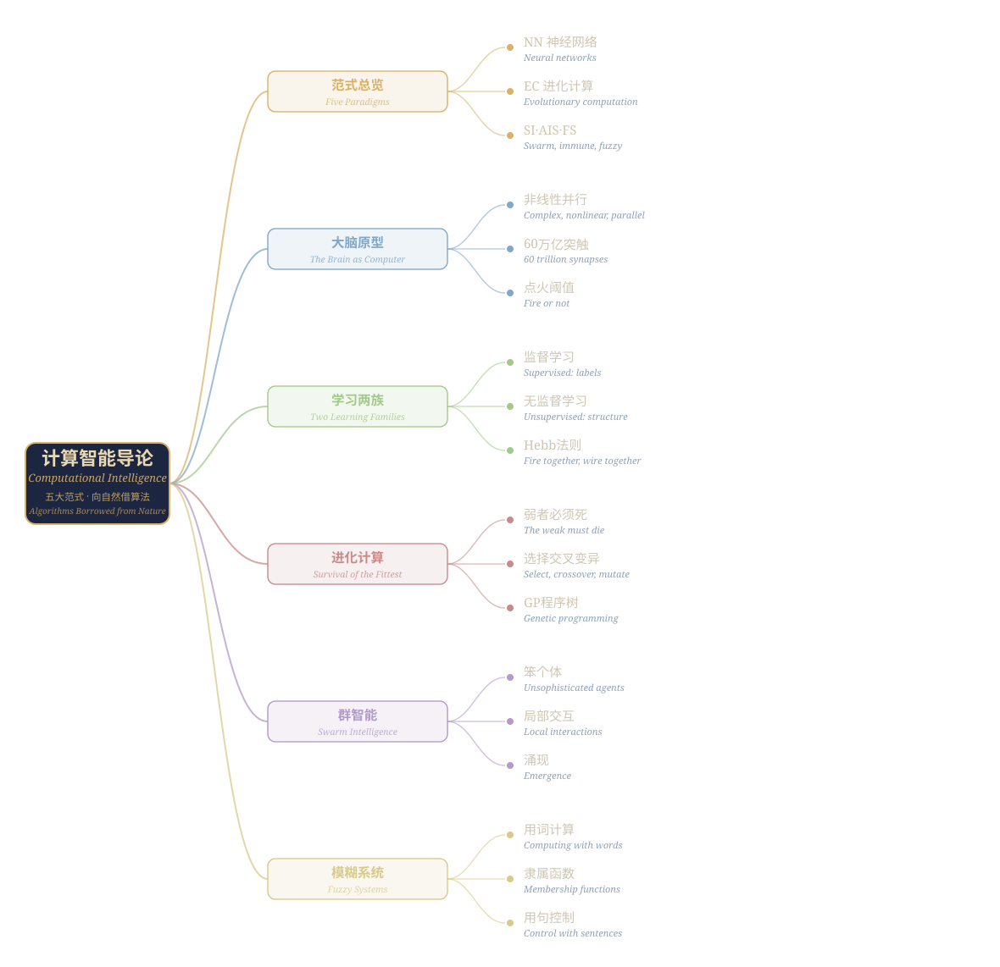

计算智能导论
〇 · 书籍信息
基本信息
| 总纲 | 全书把计算智能拆成五大范式：NN（模型神经网络）、EC（模型自然演化）、SI（模型 swarm 群体行为）、AIS（模型人类免疫系统）、FS（源于生物体与环境的交互）——第一章的范式图（Figure 1.1）是一张向自然借算法的地图 |
|---|---|
| 结构 | 六大部分：导论 → 人工神经网络（监督/无监督学习）→ 进化计算（GA·GP·DE·ES·CMA·PSO·ACO）→ 群智能 → 人工免疫系统 → 模糊系统——34章从生物原型走到数学实现，每章配 benchmark 函数与作业题 |
| 英文地位 | 这本研究手册是计算智能领域的标准入门教材：从 2002 年初版到 2007 年第二版，其「生物原型→数学模型→算法伪代码」的三段式写法被后来的教材广泛模仿 |
| 一句话 | 「Enormous successes have been achieved through the modeling of biological and natural intelligence, resulting in so-called intelligent systems.」——整本书只讲一件事：自然界的笨办法，恰恰是搜索空间里的聪明办法。 |
一 · 核心主题总览
这部六百页英文教材的四条母题：① 向自然借算法
五范式全是仿生学：大脑（NN）、自然演化（EC）、鸟群鱼群（SI）、免疫系统（AIS）、语言的模糊性（FS）——书的第一性原理是：自然界的解法是亿万次试错筛出来的，把筛法搬进计算机，比人工设计规则更高效——「The brain is a complex, nonlinear and parallel computer.」（大脑是一台复杂、非线性、并行的计算机）
② 弱个体·强集体
群智能的定义句是全书最漂亮的一句：「Swarm intelligence is the property of a system whereby the collective behaviors of unsophisticated agents interacting locally with their environment cause coherent functional global patterns to emerge.」——不聪明的个体＋局部的交互＝涌现出聪明的全局图景：没有指挥官，只有规则
③ 适者生存的搜索
进化计算把达尔文变成优化器：「Evolutionary computation (EC) has as its objective to mimic processes from natural evolution, where the main concept is survival of the fittest: the weak must die.」（主旨是模拟自然演化，核心概念是适者生存：弱者必须死去）——种群·选择·交叉·变异，四大算子构成一个可以跑起来的搜索引擎
④ 用词计算
模糊逻辑的宣言：「Where fuzzy logic is frequently described as computing with words rather than numbers, fuzzy control is described as control with sentences rather than equations.」——模糊逻辑是用词而非数字做计算，模糊控制是用句子而非方程做控制：把「如果热了就调低空调」翻译成可执行的数学
二 · Part I 导论 —— 五大范式总览—— NN · EC · SI · AIS · FS ——
The Brain: 一台非线性并行计算机
Chapter 1 原文：The brain is a complex, nonlinear and parallel computer. It has the ability to perform tasks such as pattern recognition, perception and motor control much faster than any computer.（大脑是一台复杂、非线性、并行的计算机，它在模式识别、感知与运动控制上比任何计算机都快）——解析：速度差来自结构差：硅门以纳秒计，神经以毫秒计，但大脑赢了——因为并行：皮层约有 10–500 亿个神经元、60 万亿个突触，粗略分成约 1000 个模块并行开工——单点慢、全局快，这是全书一切算法的原型直觉。
◆ 语言学习 · 原文精读 · 并行
| nonlinear | 非线性：整体不等于部分之和——学习的前提 |
|---|---|
| parallel | 并行：1000 个模块同时开工——速度差的真实来源 |
| pattern recognition | 模式识别：大脑的看家本领 |
| motor control | 运动控制：毫秒级神经完胜纳秒级硅门 |
句型 ｜ The brain is a complex, nonlinear and parallel computer.——定义句的极简写法：三个形容词排成一行，第 2 章的全部数学都是这三个词的展开。
AI 与 CI 的分界
第一章给出计算智能（CI）的定位：AI（人工智能）追求「让机器像人一样聪明」的传统路线（符号、逻辑、知识工程）；CI 则放弃「复制推理」，改为「模仿自然算法」：五范式没有一个是抄人类思维的——大脑抄的是生物结构，进化抄的是种群筛选，群体抄的是社会行为——一条「自下而上」的路：不教机器规则，让机器在数据与环境里自己长出规则。
◆ 语言学习 · 原文精读 · 范式
| computational intelligence | 计算智能：自然算法的总称 |
|---|---|
| paradigms | 范式：Figure 1.1 的五个分支 |
| intelligent systems | 「resulting in so-called intelligent systems」：建模的产物 |
| top-down vs bottom-up | 符号AI自上而下 vs CI自下而上 |
习语 ｜ CI 不抄人类思维，抄自然算法。——AI 家族的位置感：符号主义走「自上而下」，计算智能走「自下而上」——两条路在今天的深度学习里合流。
三 · Part II 神经网络 —— 从生物神经元到学习规则—— 神经元 · 激活函数 · 监督与无监督 ——
An Artificial Neuron: 从突触到权重
原文：The basic building blocks of biological neural systems are nerve cells, referred to as neurons. ... A signal is transmitted to the axon of a neuron only when the cell 「fires」.（生物神经系统的基本构件是神经细胞——神经元；只有当细胞「点火」时，信号才传向轴突）——解析：人工神经元（AN）是对生物神经元（BN）的直接建模：接收信号→加权求和→超过阈值才「点火」——神经网络的全部智慧，就是把「点火与否」这个二元判断升级成可学习的权重问题：第 2 章的激活函数与第 3 章的梯度下降，都是围绕这一点展开。
◆ 语言学习 · 原文精读 · 神经元
| neuron | 神经元：细胞体·树突·轴突三件套 |
|---|---|
| synapse | 突触：轴突到树突的连接——权重的原型 |
| fires | 点火：超过阈值才发信号 |
| activation function | 激活函数：点火的数学化 |
句型 ｜ A signal is transmitted to the axon of a neuron only when the cell fires.——「only when」是关键：神经元的本质是阈值判断——深度学习的门控思想从这里就开始了。
监督与无监督：两种学习
书把神经网络学习分成两大族：监督学习（supervised）——有标签、有目标误差、靠反向传播调权重；无监督学习（unsupervised）——无标签，靠数据自身的结构自组织：Hebbian 学习、自组织特征映射（SOM）、主成分分析——书的框架一句话讲完：有老师照标签学，没老师照邻居学；今天深度学习的预训练＋微调，本质仍是这两族学习规则的组合。
◆ 语言学习 · 原文精读 · 学习
| supervised learning | 监督学习：标签驱动误差最小化 |
|---|---|
| unsupervised learning | 无监督学习：结构驱动自组织 |
| Hebbian learning | 赫布法则：一起点火的连接变强 |
| self-organizing map | SOM：自组织特征映射 |
习语 ｜ 有老师照标签学，没老师照邻居学。——两大学习族的口诀：监督学的上限由标签质量决定，无监督学的上限由数据结构决定——数据的地位在2007年就已经被写进教材框架。
四 · Part III 进化计算 —— 适者生存即搜索算法—— 种群 · 选择 · 交叉 · 变异 ——
Survival of the Fittest: 弱者必须死去
原文：Evolutionary computation (EC) has as its objective to mimic processes from natural evolution, where the main concept is survival of the fittest: the weak must die.（进化计算的目标是模拟自然演化，核心概念是适者生存：弱者必须死去）——解析：书接着给出达尔文的残酷注脚：有的鸟巢里一只雏鸟抢到更多食物、变强，最后把兄弟姐妹全部挤出巢外——进化算法把这幅图景工程化：个体（chromosome）→适应度评估→选择→交叉（reproduction）→变异——「坏特征者弱，弱者出局」：一个优化器被三行自然史讲清楚。
◆ 语言学习 · 原文精读 · 进化
| survival of the fittest | 适者生存：EC的第一原理 |
|---|---|
| the weak must die | 弱者必须死去：选择压力的直译 |
| chromosome | 染色体：个体的编码（解向量） |
| crossover / mutation | 交叉与变异：探索与开发的两条腿 |
句型 ｜ ... the main concept is survival of the fittest: the weak must die.——冒号后的补刀：学术定义先给雅的（适者生存），再给狠的（弱者必须死）——论文写作范本：一句话两个层次。
GA 家族与遗传规划
第三部分覆盖整个进化算法族谱：遗传算法（GA）——二进制/实数编码的标准流程（第 9 章）；遗传规划（GP）——把「个体」从解向量升级为程序树（第 10 章）：让算法自己长出公式；差分进化（DE）与进化策略（ES）——实数编码的变体家族；书还讲多目标（vector evaluated GA）与协同进化（coevolution）——族谱的启示：同一个达尔文引擎，换编码方式就长出一个新分支。
◆ 语言学习 · 原文精读 · 族谱
| genetic algorithm | GA：选择·交叉·变异三件套 |
|---|---|
| genetic programming | GP：个体是程序树——算法长公式 |
| differential evolution | DE：实数编码的差分变异 |
| multi-objective | 多目标：vector evaluated GA |
习语 ｜ 同一个达尔文引擎，换编码长出新分支。——算法家族的观察法：GA解向量、GP解程序、DE解实数——引擎不变，表示法一换就是一篇新论文。
五 · Part IV 群智能与模糊 —— 涌现与用词计算—— 鸟群 · 蚁群 · 模糊集 ——
Swarm Intelligence: 不聪明个体的聪明集体
原文：Swarm intelligence is the property of a system whereby the collective behaviors of unsophisticated agents interacting locally with their environment cause coherent functional global patterns to emerge.（群智能是这样一个系统的属性：不复杂的个体只做局部交互，其集体行为却涌现出协调一致的、有功能的全局图景）——解析：这是全书最漂亮的一句定义：三要素——个体不聪明（unsophisticated）、交互仅局部（interacting locally）、全局却有序（coherent global patterns）——鸟群没有指挥官、蚁群没有蓝图：第 16 章 PSO 让粒子记住自己的最好位置，第 17 章 ACO 让蚂蚁沿途留下信息素——「记住自己＋追随邻居」两条规则，跑出全场最优的搜索。
◆ 语言学习 · 原文精读 · 涌现
| unsophisticated agents | 不聪明的个体：规则极简 |
|---|---|
| interacting locally | 局部交互：只见邻居不见全局 |
| emerge | 涌现：全局图景凭空长出 |
| pheromone | 信息素：蚁群的环境记忆 |
句型 ｜ The collective behaviors of unsophisticated agents interacting locally with their environment cause coherent functional global patterns to emerge.——定义句三要素：个体笨、交互近、全局巧——分布式系统的设计模板，两行规则足够。
Fuzzy Logic: 用词而非数字做计算
原文：Where fuzzy logic is frequently described as computing with words rather than numbers, fuzzy control is described as control with sentences rather than equations.（模糊逻辑常被描述为「用词而非数字做计算」，模糊控制则被描述为「用句子而非方程做控制」）——解析：传统控制要用微分方程描述「温度多高、转速多快」的精确关系；模糊控制只需「如果很热，就把风速调大」这样的句子——第 20 章模糊集合给「热」一个隶属度（0.7 的热），第 21 章模糊推理把规则串起来，第 22 章解模糊化把「很热」折算成具体电压——人类语言的粗糙，恰恰是面对复杂系统时的精确。
◆ 语言学习 · 原文精读 · 模糊
| computing with words | 用词计算：模糊逻辑的宣言 |
|---|---|
| membership function | 隶属函数：「热」到什么程度算热 |
| fuzzy rule | 模糊规则：如果…那么…的句子 |
| defuzzification | 解模糊化：句子折算回电压 |
习语 ｜ 用句子做控制，不用方程。——模糊控制的哲学：语言的粗糙是对复杂系统的诚实——世界先模糊后精确，工程顺着来。
六 · 人物图鉴与成长弧线—— 主角配角 · 一张表看穿 ——
主要人物
Andries P. Engelbrecht——作者——南非比勒陀利亚大学教授：CI 教材化的推手——「生物原型→数学模型→算法伪代码」三段式写法的标准制定者
大脑——全书第一模型——「The brain is a complex, nonlinear and parallel computer.」：10–500亿神经元·60万亿突触·约1000模块并行——NN 范式的原型机
达尔文——第三部分的引擎——「survival of the fittest: the weak must die」——进化计算把自然史压缩成一个优化循环
蚁群——最优雅的搜索器——ACO 蚂蚁沿路留信息素：没有蓝图，路径自己变直——涌现的最小案例
次要人物（功能位）
| 粒子群（PSO） | 第16章主角——粒子记住自己最好的位置＋追随邻居的最好位置：两条规则跑遍连续空间 |
|---|---|
| 免疫系统（AIS） | 第五范式——识别·学习·记忆的人工免疫算法：把「敌我识别」变成异常检测 |
| Hebb | 学习规则之父——「一起点火，连接变强」：无监督学习的第一条法则 |
七 · 主题与象征—— 每个道具都在说话 ——
| 大脑 ↔ 并行计算机 | NN 的原型——单点慢全局快：结构优势压倒元件速度 |
|---|---|
| 弱者必须死 ↔ 选择压力 | EC 的第一原理——「the weak must die」：没有淘汰就没有进化 |
| 笨个体 ↔ 巧全局 | SI 的涌现公式——unsophisticated＋local＝coherent global |
| 句子 ↔ 方程 | 模糊控制的宣言——computing with words：语言的粗糙是复杂系统里的精确 |
八 · 写作手法赏析—— 怎么写，就能怎么学 ——
① 三段式章节法
生物原型→数学模型→伪代码——全书 34 章统一的骨架：后来 CI 教材的默认格式
② 定义句双层次
「适者生存：弱者必须死」——先雅后狠：冒号补刀是英文教材写作的范本
③ benchmark 函数库
第 555 页起的基准函数——算法不比故事比收敛：统一赛场的传统由此确立
④ 图先行
Figure 1.1 范式图——一页地图定位全书：教材的第一张图就是目录的替身
九 · 名段欣赏—— 原文精读 · 逐段赏析 ——
十 · 金句摘录—— 8 条 · 中英对照 · 带出处 ——
"Enormous successes have been achieved through the modeling of biological and natural intelligence."从生物智能与自然智能的建模中已取得巨大成功。—— Chapter 1 · Introduction
"The brain is a complex, nonlinear and parallel computer."大脑是一台复杂、非线性、并行的计算机。—— Chapter 1 · Paradigms
"It is estimated that there is in the order of 10-500 billion neurons in the human cortex, with 60 trillion synapses."据估计人类皮层约有 100–5000 亿个神经元、60 万亿个突触。—— Chapter 1 · NN
"A signal is transmitted to the axon of a neuron only when the cell 「fires」."只有当细胞「点火」时，信号才被传向轴突。—— Chapter 1 · Biological Neuron
"Evolutionary computation (EC) has as its objective to mimic processes from natural evolution, where the main concept is survival of the fittest: the weak must die."进化计算的目标是模拟自然演化，其核心概念是适者生存：弱者必须死去。—— Chapter 1 · EC
"swarm intelligence is the property of a system whereby the collective behaviors of unsophisticated agents interacting locally with their environment cause coherent functional global patterns to emerge."群智能是这样一个系统的属性：不聪明的个体仅做局部交互，其集体行为却涌现出协调有序的全局图景。—— Chapter 16 · PSO
"Where fuzzy logic is frequently described as computing with words rather than numbers, fuzzy control is described as control with sentences rather than equations."模糊逻辑常被描述为「用词而非数字做计算」，模糊控制则被描述为「用句子而非方程做控制」。—— Chapter 22 · Fuzzy Controllers
"More formally defined, emergence is the process of deriving some new and coherent structures, patterns and properties (or behaviors) in a complex system."更正式地说，涌现是在复杂系统中产生新的、协调一致的结构、模式与性质（或行为）的过程。—— Chapter 16 · Emergence
十一 · 拓展阅读—— 原文 · 词条 · 译文 ——
十二 · 个人感悟与心得—— 三点心得 ——
三点感悟
① 自然是被试错筛过的老师
五范式全是仿生：大脑·演化·鸟群·免疫·语言——亿万年试错筛出来的解法，比人工设计的规则更抗噪：向自然借算法，是效率上的外包，不是比喻上的修辞。
② 简单规则跑出复杂行为
「unsophisticated agents interacting locally ... cause coherent global patterns to emerge」——笨个体＋局部交互＋全局涌现：群智能把「没有指挥官怎么协作」这个问题，回答成了「两行规则」——分布式思维的最佳教材。
③ 粗糙是复杂系统的诚实
模糊逻辑「用词计算、用句控制」：当微分方程写不动「很热」「大概」的时候，隶属函数接住了——承认模糊，反而是对复杂世界的精确建模。
六百页读毕，这本英文教材留下的不是算法清单，是一种工程世界观——大脑是一台并行计算机（NN）→ 弱者必须死去（EC）→ 笨个体涌现巧全局（SI）→ 用句子做控制（FS）——四句话的公共语法是：把自然界的笨办法搬进计算机，因为笨办法是被亿万次试错验证过的聪明——所谓计算智能，就是向自然抄作业的科学。
十三 · 一页速查（复习用）
| 五范式 | NN·EC·SI·AIS·FS：向自然借算法的地图 |
|---|---|
| 并行计算机 | 大脑三形容词：复杂·非线性·并行 |
| 弱者必须死 | EC第一原理：选择压力即优化动力 |
| 涌现 | 笨个体＋局部交互＝巧全局 |
| 用词计算 | 模糊逻辑宣言：用句子做控制 |
十四 · 全书思维导图—— 一图纵览 ——

一图纵览全书骨架 · 中英双语对照 · 手机端可左右滑动查看全图